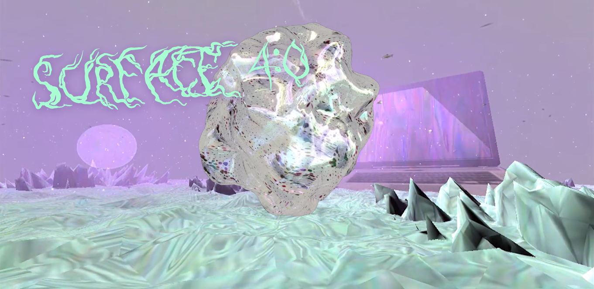
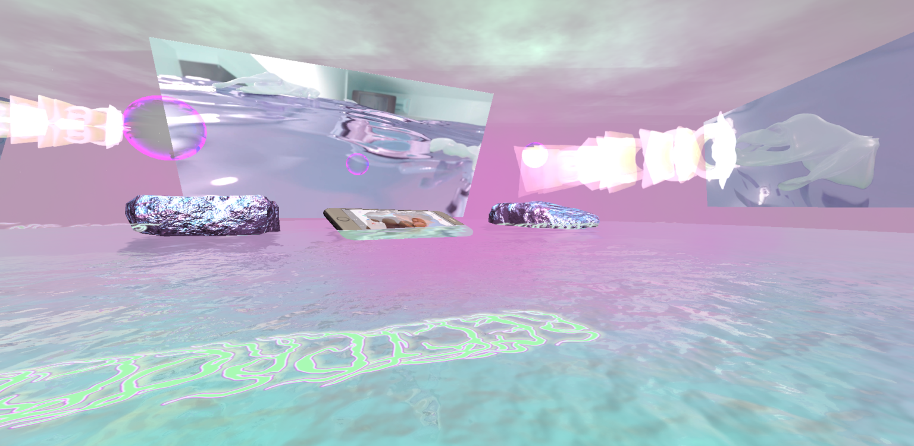
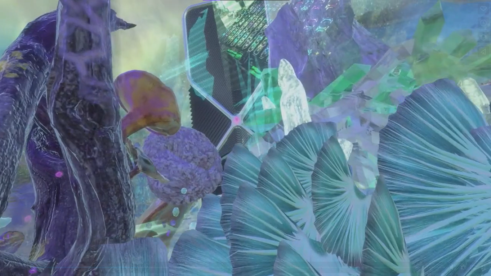
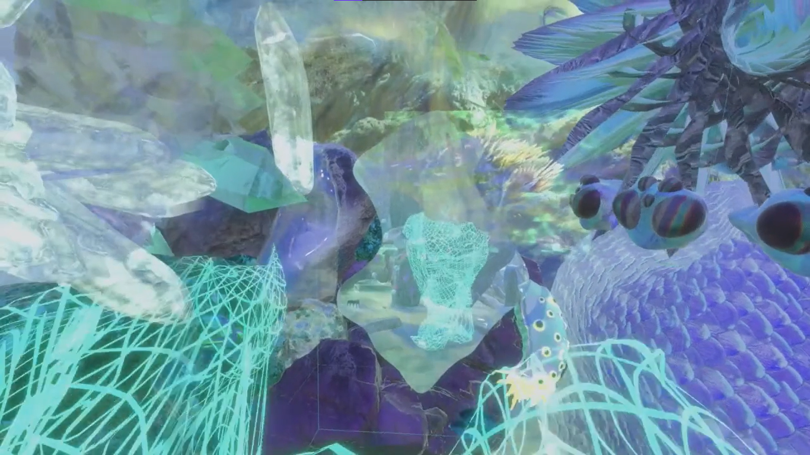
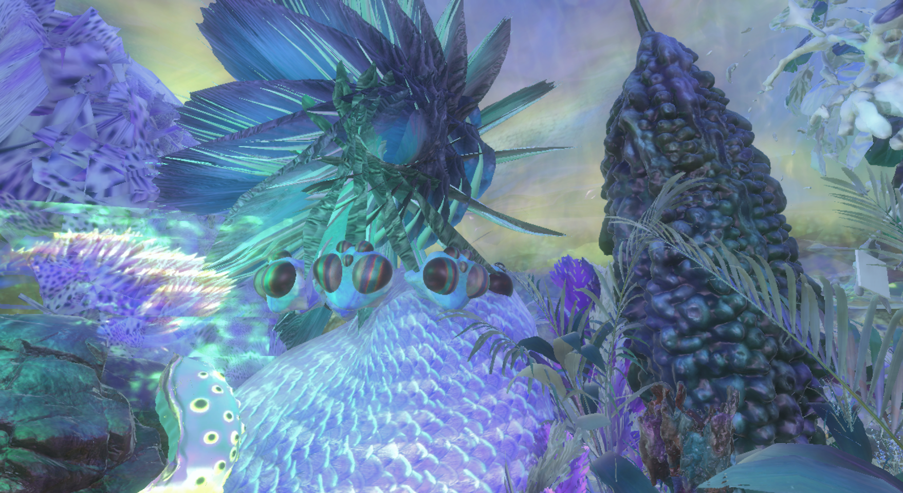

Imagine a veil, a filter surface 4.0 [chromatic chatter no.2] (2020) by Marie-Eve Levasseur
"Imagine a veil, a filter, a second skin, an extra protection, an organic extension, a symbiosis. Imagine being able to wear your thoughts, your emotions. To be able to escape definition, meaning, categorization, objectification, commodification, codification, quantification, calculable parameters, numbers."
"Imagine being able to say it in colours, in images, in contrasts, in patterns, in repetition, in chromatic insistence, in iridescence. If you could put yourself in someone else's skin, feel what she feels. become a plant, a pregnant woman, a newborn baby. Finally understand what the other perceives. The pain, the pleasure.
Imagine the power of seduction of this temporary surface made from algae and biodegradable nanoparticles. The second skin allows you to feel the other through the network. The surface takes the shape, colours and properties you want. It can fulfil a mere aesthetic purpose or allow you to put yourself in another skin. Become the other, feel its body conditions and optimise your empathy."
[Script]


Still frames from surface 4.0 [chromatic chatter no.2] (2020), by Marie-Eve Levasseur, an installation, an experimental video, and a game.
surface 4.0 [chromatic chatter no.2] (2020) is an atmospheric teaser for a poetic tutorial, in which Marie-Eve Levasseur proposes a science-fiction narrative featuring a symbiotic extension, a becoming-octopus. This extension acts as an empathetic device that allows the wearer to share other beings’ sensoriums, translate hugs and cuddles from a distance, communicate emotions, have chromatic conversations or just show the involuntarily changing colours of one’s personality.


surface 4.0 [chromatic chatter no.2] (2020), by Marie-Eve Levasseur, a teaser for a poetic tutorial. It proposes a fictional narrative featuring a symbiotic extension. It is a virtual immersive exploration across variable dimensions of reality.
Through exploring the role of the prosthetic skin as a site for human and non-human encounters, comparable in its role to interfaces in computing, Marie-Eve Levasseur envisages a future in which the anthropocentric ideas of general intelligence and communication are broadened to include sensorial ways of knowing and becoming with others. Taking inspiration from octopi colour-changing signalling systems, the artist advocates for technologies that could eradicate the idea of difference as a negative, and embrace more-than-human diversity at a time of blurring divisions between organic and synthetic worlds. surface 4.0 [chromatic chatter no.2] is accompanied by an augmented reality face filter available on Instagram. By trying on the symbiotic extension themselves, the viewers are encouraged to explore their ways of being with others in the networked reality.

surface 4.0 [chromatic chatter no.2] (2020), by Marie-Eve Levasseur, exploring the fusion between reality and fiction and the difuse limits of our perception as human beings. It explores the potential of our body and questions our attachment to any kind of limited realities.
surface 4.0 is a virtual world based on a fictive situation, where human beings would be able to generate themselves a temporary second skin that covers the body all over (inside and outside), acting as a prosthesis, interface or extension. It would function in collaboration with the body, allowing intimacy and connection through tactile sensations, while two bodies are away from each other. The extension can change colors and modify the surface of the body like an octopus, allowing a chromatic language to appear (and the possibility to communicate with other species). This second skin becomes a tool for comprehension and empathy between genders, species and identities. You can put yourself in another’s skin and feel what another body can feel.